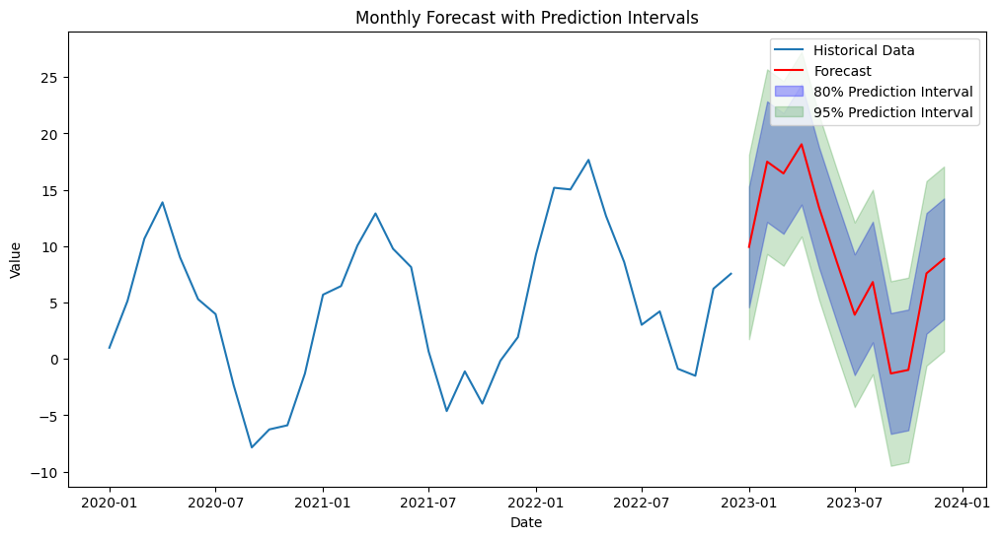

Time Series First Principles Series
This post dives into the eighth principle of a good time series forecast, capture uncertainty. Check out the initial post in this series to get a high level view of each principle.
Building Trust
Would you give your retirement savings to a hedge fund manager because they asked nicely? Probably not. Instead, you would like to do your research about them. Ask them how well they performed in the market historically, and also see how they expect the future markets to unravel in the near term. If their answer to those questions are, “I don’t have a historical track record” and “I have no clue what the future holds” then you are probably not going to give them one penny of your hard earned money. The same holds true for using a time series forecast created by machine learning (ML) models. In order to build trust with the end user of the forecast, you need to show them how a similar forecast would have performed historically and also quantify some aspect about the future. Let’s dive into each one.
Past Uncertainty
Before a ML model can be used to forecast the future, we need to see how it has handled the past. This is called back testing, where we see how a model performed historically. This can give us a good proxy around how it could perform in the future.
Back testing at its core is all about training a model on a portion of your historical data set (training data), then using the trained model on another portion of the historical data (testing data). This can be as simple as using the first 80% of your historical data to train a model, and use the last 20% for testing. Check out a previous post to learn more about why the order of that train/test split is important.
There are also more advanced methods of doing this, like time series cross-validation. This involves many rounds of training a model and then creating a prediction on the testing data. Time series cross-validation can be used to tune model hyperparameters (inputs a model cannot learn from but must be given by a human) but is especially useful for model back testing. Check out the chart below that shows how we can effectively back test using a time series cross-validation approach. Each pass has its own train and test split, and the testing splits can overlap from one pass to another.

-
Source: Uber Engineering
In order to capture how accurate the back testing is, we need to calculate a metric that summarizes the model’s performance on the testing data splits. There are countless metrics we can use, each with their own pros and cons. That kind of discussion is out of scope for this post but let’s highlight a few common ones you could use in determining how accurate a model is during back testing.
- Mean Absolute Error (MAE)
- Description: MAE measures the average magnitude of the errors in a set of forecasts, without considering their direction. It’s calculated as the average of the absolute differences between forecasts and actual observations.
- Strengths: MAE is straightforward and easy to interpret as it directly represents average error magnitude.
- Weaknesses: MAE treats all errors with the same weight, thus large errors have the same influence as small ones, which might not be optimal for all applications.
- Root Mean Squared Error (RMSE)
- Description: RMSE is the square root of the mean of the squared errors. It measures the average magnitude of the error, with the squaring giving higher weight to larger errors.
- Strengths: RMSE is sensitive to outliers and provides a measure of how large errors are when they occur, which can be crucial for many practical applications.
- Weaknesses: Like MSE, RMSE can be heavily influenced by outliers and large errors, possibly leading to overestimations of the typical error if the error distribution is skewed.
- Mean Absolute Percentage Error (MAPE)
- Description: MAPE expresses accuracy as a percentage, and it measures the size of the error in percentage terms. It is calculated as the average of the absolute errors divided by the actual values, expressed as a percentage.
- Strengths: MAPE is scale-independent and provides a clear interpretation in terms of percentage errors, making it easy to communicate.
- Weaknesses: MAPE can be highly skewed when dealing with values close to zero, and it disproportionately penalizes underestimations compared to overestimations.
Future Uncertainty
Now that we’ve quantified how well our model works historically, we can just give the future forecast to our end user right? Not so fast. Our model might say that next month our company’s product will make $100, but if that’s all the info we provide to the end user of that forecast that’s not a good way to build trust. Instead we need to show how confident we are in that $100 forecast. How likely are we to hit that number? That’s where prediction intervals come in.
Prediction intervals help quantify the future uncertainty in our model’s forecast. They are statistical ranges, typically based on the forecast error, used to indicate the likelihood that the future value of a time series will fall within a specified range at a certain confidence level. Common ranges for a prediction interval are 80% and 95%. For example, the future forecast may be $100 but have a 95% prediction interval of $75 and $125. This means that there is a 95% likelihood that the future value will fall between $75 and $125. The tighter the range, the less uncertainty there is in the forecast. Below is an example forecast with 80% and 95% prediction intervals.

Reversal
The back testing process can only ever be a proxy of what kind of results to expect on the future forecast. It follows the assumption that the future will be similar to the past. Sometimes this is not the case, and future results may be worse than historical back testing performance.
While prediction intervals help quantify uncertainty, they also do not do a perfect job. There may be times where the future forecast will fall outside of the ranges. It’s not the end of the world when it does, but instead shows that the future is often different than what happened in the past. This is where strong domain knowledge comes in to understand what’s truly an outlier and what’s a new fundamental factor in your business going forward. For example, a new product launch in the future is hard to quantify with a prediction interval, but once it happens we can learn from that information and try to capture it the next time we train our model.
finnts
Back testing and prediction intervals is tough work. Thankfully my forecasting package, finnts, takes care of both of these for you. You can even customize the back testing process to fit your needs. Check out the package and see just how easy forecasting can be.
Final Thoughts
Capturing uncertainty in time series forecasting is essential for creating robust forecasts that stakeholders can rely on. Utilizing back testing and prediction intervals not only strengthens the credibility of forecasts but also provides users with a clearer perspective on potential risks and variations. In the end these approaches help build trust with the forecast end user. The more trust we can build, the more likely the ML forecast will be used.